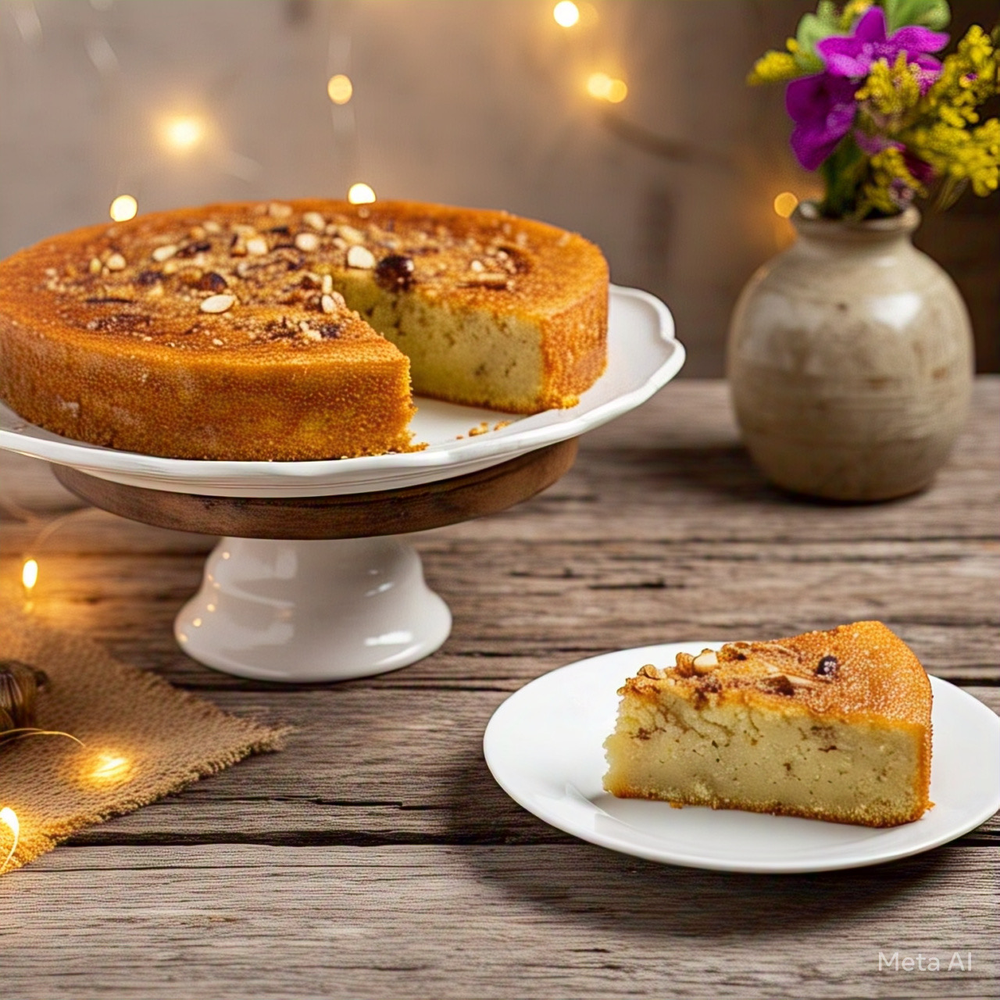

Cake menu list
1. Classic Chocolate Cake (Eggless)
Ingredients
- 1 cup all-purpose flour (maida)
- 1/2 cup cocoa powder
- 1 tsp baking soda
- 1/2 cup sugar
- 1/2 cup oil
- 1 cup milk
- 1 tbsp vinegar or lemon juice
- 1 tsp vanilla essence
Preparation
- Mix vinegar with milk and let it curdle for 5 mins.
- In another bowl, mix flour, cocoa, baking soda, and sugar.
- Add milk mixture, oil, and vanilla. Mix well.
- Pour into a greased cake tin and bake at 180°C for 30-35 mins.
- Let it cool, then frost if you like!
2. Vanilla Sponge Cake (With Egg)
Ingredients
- 1 cup all-purpose flour
- 3/4 cup sugar
- 2 eggs
- 1/2 cup butter or oil
- 1/2 cup milk
- 1 tsp baking powder
- 1 tsp vanilla extract
Preparation
- Beat eggs and sugar till fluffy.
- Add melted butter, milk, and vanilla.
- Mix flour and baking powder, fold into wet mix.
- Pour into greased tin and bake at 180°C for 30 mins.
3. Mug Cake (Microwave, 2 mins!)
Ingredients
- 4 tbsp flour
- 2 tbsp cocoa powder
- 3 tbsp sugar
- 1/4 tsp baking powder
- 3 tbsp milk
- 2 tbsp oil
- A few drops vanilla essence
Preparation
-
Mix all ingredients in a microwave-safe mug. Microwave on high for 1.5 to 2 minutes. Eat warm!
4. Banana Walnut Cake
Ingredients
- 2 ripe bananas (mashed)
- 1 cup flour
- 1/2 cup sugar
- 1/4 cup oil
- 1/4 cup milk
- 1 tsp baking powder
- A pinch of cinnamon
- Chopped walnuts
Preparation
-
Mix dry and wet ingredients separately. Then combine, fold in walnuts. Bake at 180°C for 30-35 mins.
5. Rava (Sooji) Cake (Eggless & No Oven)

Ingredients
- 1 cup rava (semolina)
- 3/4 cup curd
- 1/4 cup sugar
- 1/4 cup milk
- 1/4 cup oil
- 1 tsp baking powder
- A pinch of cardamom
Preparation
-
Mix everything, let it rest for 10-15 mins. Pour into greased tin and steam or bake at 180°C for 25-30 mins.